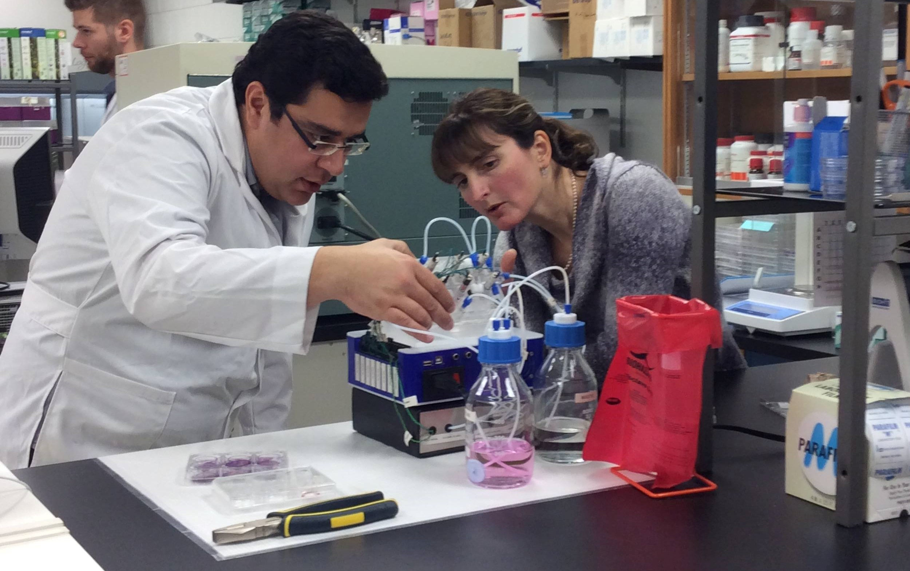
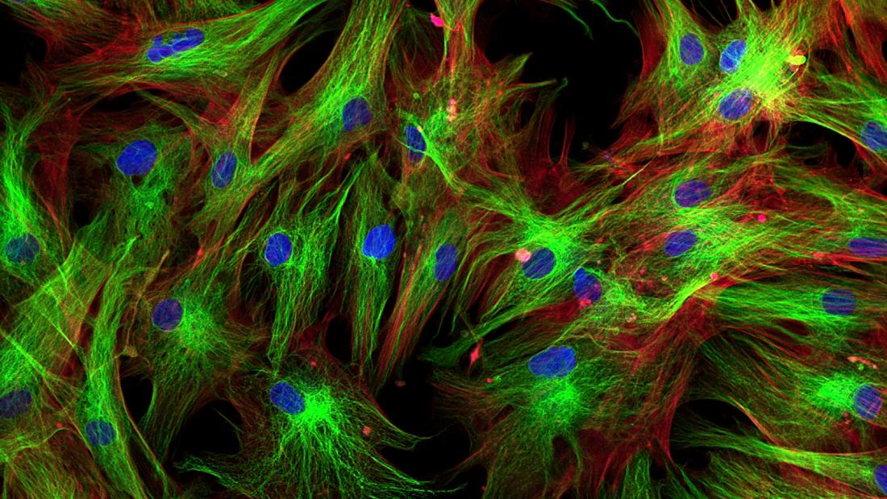
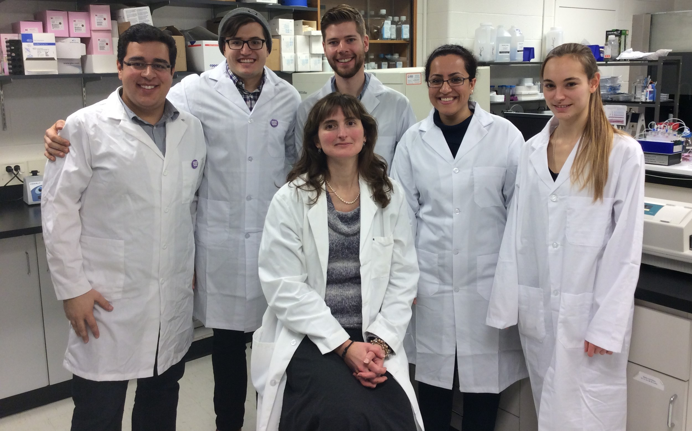

Welcome to the Material Interaction with Biological Systems Lab at the Univeristy of Waterloo



The Material Interactions with Biological Systems Laboratory focuses on improving the biocompatibility of biomaterials and biomedical devices, specifically for the ocular and circulatory systems. With the increasing utilization and invention of biomedical devices, the lives of countless individuals have been improved significantly. To maintain and maximize this improvement, the potentially life-threatening side-effects of such innovations, including infection, thrombosis, and fibrosis must be understood, and through this understanding, prevented, to ensure each patient’s safety and satisfaction. Hence, this laboratory studies the interactions that occur between biomaterials and biological systems to identify the mechanisms behind these negative outcomes along with those that could theoretically arise from a biomedical device or therapeutic measure. To do so, our laboratory studies biological systems’ responses to biomedical devices and therapies on a cellular level to comprehend and identify these processes and use this to quantitatively evaluate their biocompatibility. By understanding these mechanisms, and recognizing areas ripe for improvement in the industry, our laboratory innovates by developing materials, therapeutics and devices with improved biocompatibility, independently and alongside biomedical companies. To justify the value of our conceptions, we often develop or work with in vitro models to closely represent the biological systems we study to negate the necessity of testing on humans and animals. Overall, MIBS is dedicated to the improvement of therapeutics, and biomedical devices for the sake of innumerable patients worldwide.